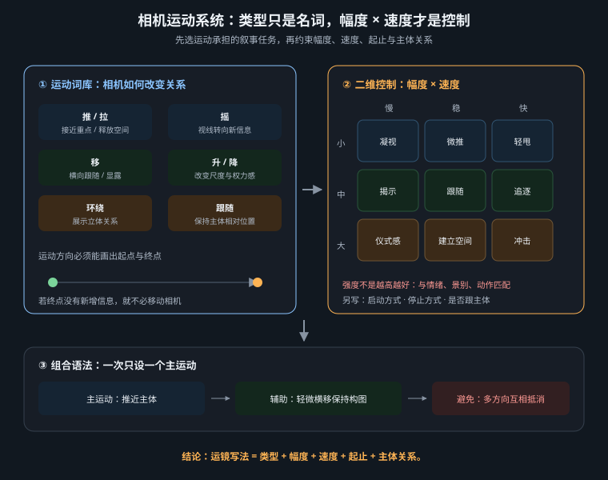

把摄影机运动写成可观察的空间变化，并用起止状态、单一主运动与分级验证提高生成成功率

“cinematic camera movement”只表达愿望，没有告诉模型摄影机如何改变位置、朝向或焦距。可执行的运镜至少要回答三件事：摄影机怎样动、画面从什么状态开始、最终停在哪里。H3 的标准表达可概括为运动类型 + 可选幅度 + 可选速度，并写进镜头动作句，而不是在末尾堆成标签。中等幅度与常速通常省略；只有小幅、大幅、慢速或快速确实影响叙事时才补充。
The camera pushes in with small amplitude at slow speed toward the sealed envelope, ending on a close shot of the cracked wax stamp.
这句话的主运动是 push in，幅度是 small，速度是 slow，目标是 envelope，终点是 close shot。相比 cinematic, dynamic camera, push in, slow，自然英语明确了连续路径与停止条件。先写主体、环境和初始构图，再写运镜与画内动作，最后写落点；模型更容易把运动理解为一个时间过程。
| 类型 | 摄影机发生什么 | 画面证据 | 自然英语写法 |
|---|---|---|---|
| Push In / Pull Out | 机身向前 / 向后移动，也常称 dolly in / out | 透视与前后景视差改变 | The camera slowly pushes in toward her hands. |
| Zoom In / Zoom Out | 机身不动，只改变焦距 | 主体放大或缩小，机位透视基本不变 | The lens slowly zooms in while the camera remains stationary. |
| Pan Left / Right | 机位不动，镜头水平旋转 | 视线扫向左右，新区域进入画面 | The camera pans right to reveal the doorway. |
| Truck Left / Right | 整个摄影机水平平移 | 前后景产生横向视差 | The camera trucks right with small amplitude. |
| Tilt Up / Down | 机位不动，镜头垂直旋转 | 视线从低处扫向高处或反向 | The camera tilts up from the boots to the face. |
| Pedestal Up / Down | 整个摄影机垂直升降 | 观察高度改变，遮挡与视差随之变化 | The camera slowly pedestals up above the table edge. |
Push / dolly 与 zoom 不能互换。前者走进空间，后者改变焦距；若要前景掠过、背景相对位移，应写 push 或 dolly，而不是 zoom。Pan 与 truck的区别是旋转和横移，tilt 与 pedestal的区别是镜头仰俯和机身升降。提示词若混写 pan right while sliding right，模型可能把两条路径平均成不稳定漂移。
一个生成片段优先只设一个主运镜：静止、推、拉、横摇、横移、俯仰、升降、弧移或跟拍择一。主体可以做一个简单动作，但不要再叠加第二种强运镜。需要“先横移再环绕再推近”时，拆成三个镜头生成，在剪辑中连接，比要求模型同时维护空间、人物与镜头轨迹更可控。
可靠性会随模型版本、文生视频或图生视频模式、参考帧约束、时长、分辨率和主体复杂度变化。下表是短时单镜头、单一主体、普通场景下的测试起点，不是对所有平台永久有效的结论。版本更新后应以同一测试集重跑，并记录日期、模式、seed 与成功样本数。
| 运镜任务 | 相对风险起点 | 主要原因 | 提高可靠性的条件 |
|---|---|---|---|
| Static Shot | 低 | 无需持续重建机位 | 写明 locked-off，只保留轻微画内运动 |
| 小幅慢速 Push / Pull | 较低 | 路径单一，构图变化可预测 | 给出明确目标与终点景别 |
| 小幅 Pan / Tilt / Truck | 中 | 需要补出画外空间或保持视差 | 简化背景，限定方向和揭示对象 |
| Pedestal / Arc Shot | 中至较高 | 遮挡关系、背面信息或高度变化增加 | 减小幅度，避免完整环绕，使用参考终帧 |
| Tracking Shot | 较高 | 主体运动与摄影机运动必须同步 | 降低人物动作幅度，保持匀速和清晰路径 |
| 快速复合运镜 / Dolly Zoom | 高 | 多条运动与焦距变化相互约束 | 拆镜或后期完成，不把生成当唯一方案 |
下面是一条可直接用于 H3 文生视频结构的单镜头提示词。它只采用一个主运镜，主体动作也被压缩为“抬起信封并停住”；摄影机从中景开始，以小幅慢速推镜落到蜡封特写。声音与非画内音乐分别进入对应字段。
integrated_multimodal_description: [Shot 1] Live-action, cinematic, a medium shot frames an archivist seated alone at a long oak table in a dim records room, with tall shelves receding into soft shadow behind her. A sealed cream envelope rests between her hands beneath one warm desk lamp. The camera pushes in with small amplitude at slow speed toward the envelope as she lifts it once, turns the cracked red wax stamp toward the lens, and then holds completely still. The shot ends on a stable close shot of the wax stamp, with her face remaining softly visible in the background and the envelope preserving its shape, color, and position. overall_soundscape: Low room tone and a distant ventilation hum continue throughout. Paper rustles once as the envelope is lifted, followed by the quiet creak of the wooden chair. non_diegetic_music: Sparse low piano notes at a slow tempo, joined by one sustained cello tone that gradually decreases in volume at the end.
提交前可把主运动句单独朗读：摄影机是向前移动，不是变焦；幅度和速度有意义；目标可见；结尾能截成一张明确画面。若使用首帧或首尾帧模式，还应采用平台规定的图片对齐指令，并让动作路径从参考起点连续收敛到参考终点，不要只重复描述两张静态图。
| 控制层 | 能控制什么 | 不能假定什么 | 建议记录 |
|---|---|---|---|
| 文本提示词 | 运动类型、方向、目标、起止构图、动作顺序 | 不能保证像物理摄影机一样精确走轨 | 完整 prompt、语言版本、修改点 |
| 时长 | 为运动提供完成时间 | 时长翻倍不代表运动距离自动翻倍 | 有效秒数与起止帧 |
| 参考图 / 首尾帧 | 约束身份、构图和端点 | 不能自动补全被遮挡背面或合理中间态 | 输入模式、参考强度、图片版本 |
| seed / 随机性 | 辅助复现和单变量对照 | 跨模型、跨版本不一定保持一致 | seed、模型名、版本、生成日期 |
| 分辨率 / 画幅 | 改变构图空间与交付尺寸 | 更高分辨率不必然提高运动一致性 | 宽高、画幅、裁切方式 |
平台参数名与可用范围应以当前界面和当前官方文档为准。某平台可能提供 camera control、motion strength、guidance 或 seed，另一平台可能完全没有；不要把 A 平台参数原样塞进 B 平台，也不要虚构不存在的数值。可靠工作流是先用默认参数验证运动语义，再一次只改变时长、参考强度或运动幅度中的一个变量。
建立三条除运镜句外完全相同的样本：A 为固定镜头，B 为小幅慢速运动，C 为大幅或快速运动；每条至少生成数次，分别记录“运动类型正确、方向正确、身份稳定、空间连续、终点命中”五项。不要只挑最好的一条比较，也不要用不同主体、画幅或时长证明某个运镜更强。样本量较小时，结论应写成“本轮测试中更稳定”，而不是“模型一定擅长”。模型或版本更新后，用原始提示词重新测试；若结果变化，更新表格的适用条件，而不是保留过期标签。这样得到的可靠性是可追溯的项目经验，不是脱离版本与输入条件的传说。
“人物奔跑 + 摄影机跟拍”要求模型同时维持人物骨骼、步态、背景视差和相对距离，是典型双重运动风险；再加雨、飘发、旋转和快速推镜，会让约束互相争夺。优先保留叙事最重要的一条：要看人物表演，就固定摄影机让人物穿过画面；要看空间穿行，就弱化肢体动作；必须跟拍时，让主体直线匀速、摄影机保持固定距离，并缩短镜头。
| 失败现象 | 可能原因 | 先做的修正 |
|---|---|---|
| 推镜看起来像数字放大 | 写成 zoom，或场景缺少前后景证据 | 改为 push in，加入桌沿、门框等视差参照 |
| 横摇变成横移或漂移 | pan 与 truck 混写，终点不明确 | 只留一种类型，写明 reveal 的对象和结束构图 |
| 人物脸在靠近时变化 | 终点过近、运动过快、身份约束不足 | 减小幅度和速度，终点改为近景而非极特写 |
| 镜头不停或冲过目标 | 只有方向，没有结束状态 | 补写 ending on a stable close shot |
| 背景融化、物体重复 | 大幅移动持续重建复杂空间 | 简化纵深和人群，拆镜，或改用小幅运动 |
| 跟拍中步态和距离失控 | 主体与摄影机双重运动过强 | 固定其一，或降低速度、动作幅度与时长 |
失败后不要立刻追加“perfect、smooth、professional、high quality”。先删除第二运镜、缩小幅度、降低速度、减少主体动作，再补起止状态。形容词不能替代运动机制；一条可验证的路径，通常比十个质量词更有效。
运镜的高级感不来自轨迹数量，而来自运动与叙事信息的对应：推镜收紧注意，拉镜揭示关系，摇镜把视线交给新对象，横移制造视差，固定镜头让画内动作成为主角。先让模型稳定完成一件事，再在剪辑层组合节奏，才是可复现的动态叙事。